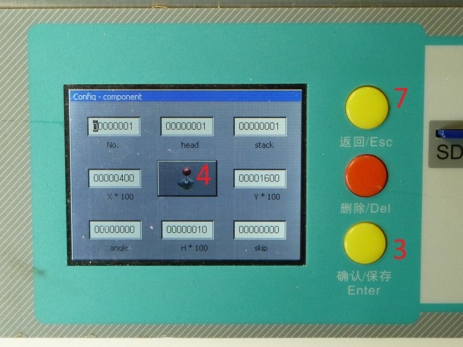
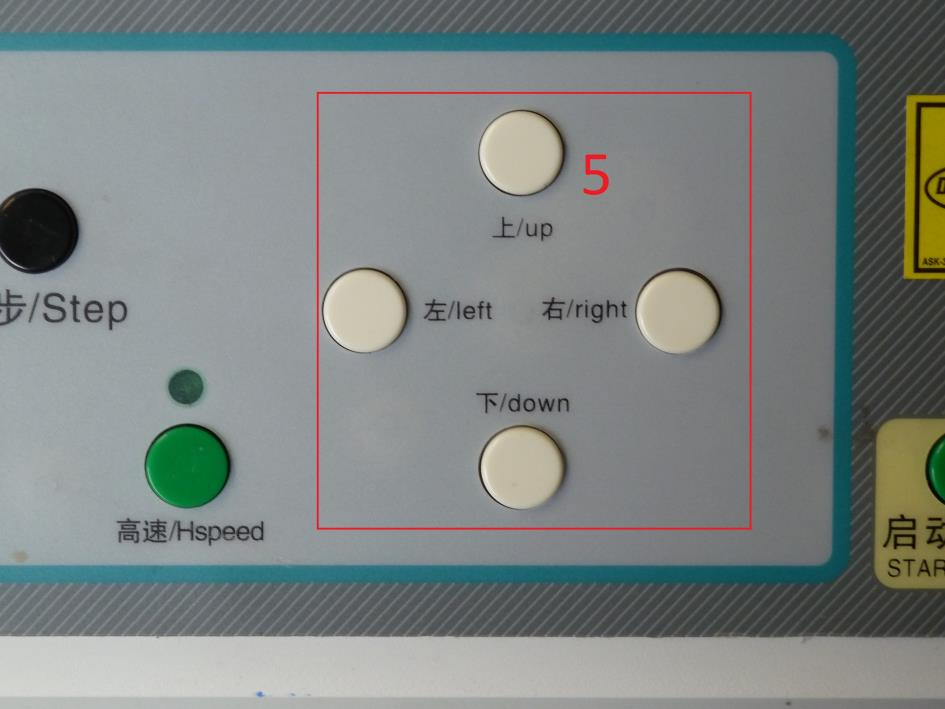
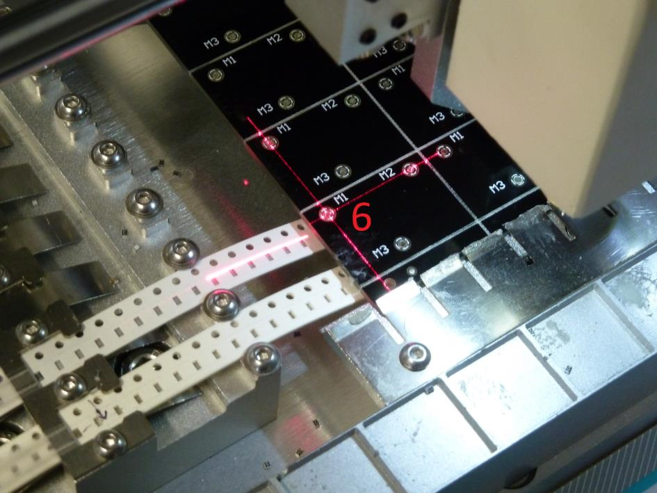

Tips and tricks
Finding the origin
To make sure you have entered the correct origin you can do the following:
-
Make a new output file containing only your fiducials.
-
Open the file in editor mode on the machine and select one of your fiducials.
-
Press on the yellow enter button.
-
Press on the joystick icon on the screen (locate button).
-
The laser will now indicate where the machine thinks the fiducial is located. With the four white buttons on
the left you can correct the laser. Do not press the enter button!
Move the head of the machine until the laser points to your fiducial.
-
When the lasers location is on the fiducial you have a set of new virtual coordinates, the difference
between the new coordinates and the real coordinates is your origin compensation. This can be negative.
Xnew - Xold = Xorigin.
Ynew - Yold = Yorigin.
-
Press the escape button.
-
Edit the origin line and enter the values you have calculated.
-
Now repeat step 2-4, normally the laser should point to the fiducial now.



Top and bottom with same stack configuration
If you have a top and a bottom phase with the same stack configuration, you may want to do the following:
Setup all reels for the first phase, export the phase, select the second phase and load the stack configuration
of the first phase.